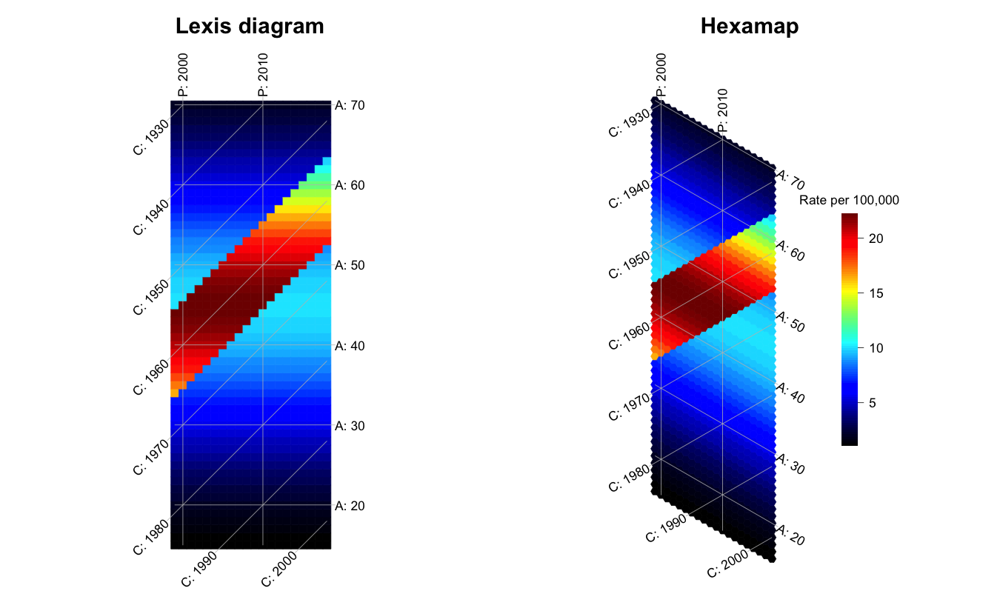
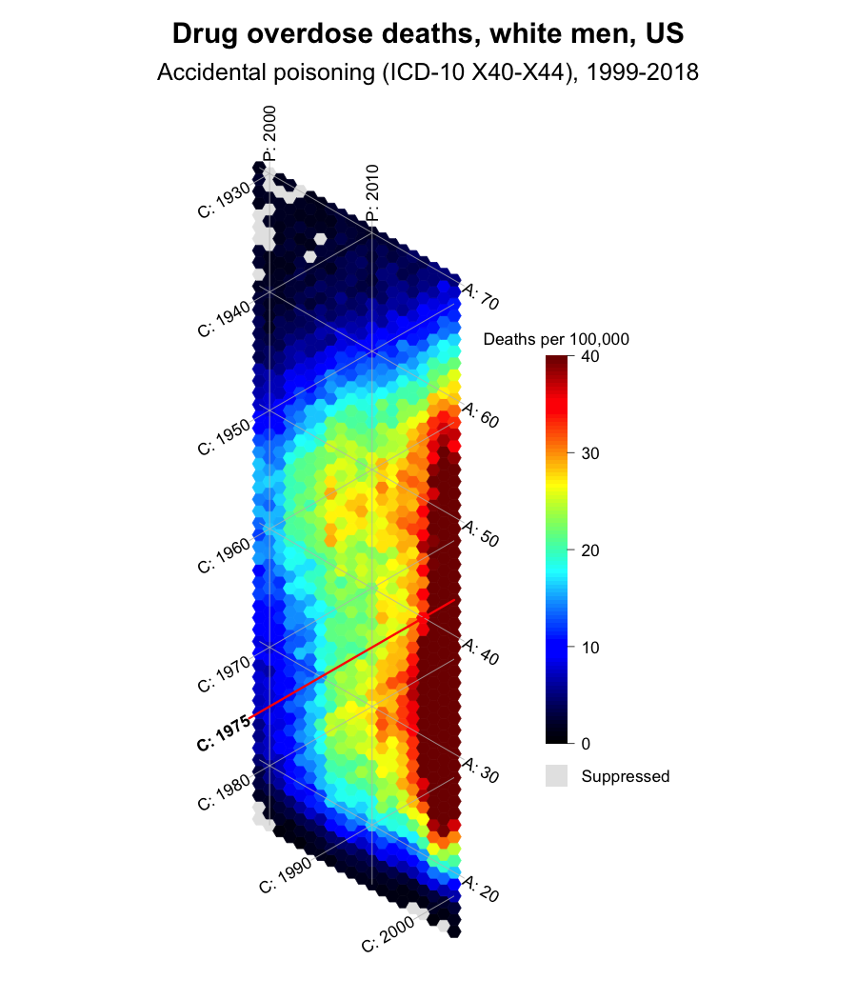
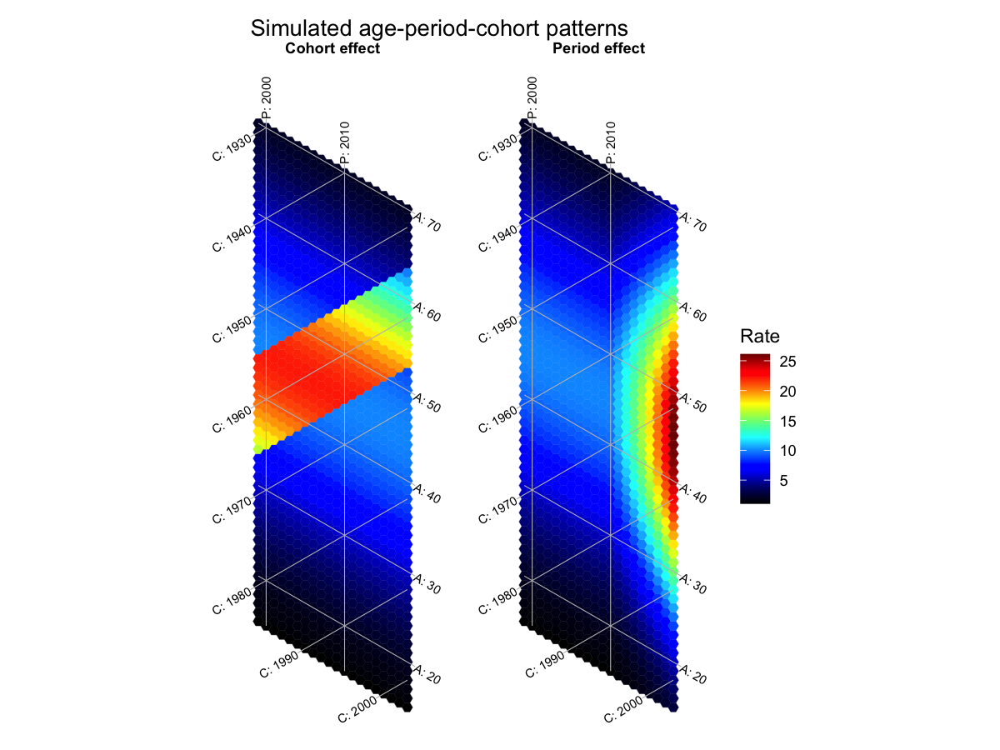

hexamap draws hexamaps: heatmaps of age-period-cohort (APC) data made of hexagonal tiles, so that age, period and cohort sit on three axes at equal 60° angles. It implements the method of Jalal and Burke (2020).
Why hexagons?
The traditional Lexis diagram puts period and age on the x and y axes, which leaves cohorts on the diagonal. Relative to age and period, that layout
- compresses patterns between adjacent cohorts by about 30%,
- stretches patterns within each cohort by about 41%, and
- lets adjacent tiles along a cohort touch only at a corner.
A hexagonal grid places all three APC axes at equal angles, and adjacent tiles share a full edge along every axis. Below, the same simulated rates have a high-risk group of birth cohorts (1955-1965). The band is easier to follow on the hexamap.
library(hexamap)
rates <- simulate_apc(
ages = 15:70, periods = 1999:2018,
age_effect = function(a) -((a - 45) / 20)^2,
cohort_effect = function(c) ifelse(c >= 1955 & c <= 1965, 0.8, 0)
)
par(mfrow = c(1, 2))
lexis_map(rates, title_text = "Lexis diagram", legend = FALSE)
hexamap(rates, title_text = "Hexamap", scale_units = "Rate per 100,000")
Installation
hexamap will be on CRAN soon. In the meantime, install the development version from GitHub:
# install.packages("pak")
pak::pak("CISNET-COBRAS/hexamap")Example: drug overdose deaths
overdose_white_men has accidental drug overdose death rates among white men in the United States, by single year of age and calendar year, from CDC WONDER: the data of Figure 1 in the paper. Ages and years come from the matrix dimnames, and highlight traces one birth cohort.
hexamap(overdose_white_men,
colorbar_range = c(0, 40),
scale_units = "Deaths per 100,000",
highlight = list(cohort = 1975),
na_label = "Suppressed",
title_text = "Drug overdose deaths, white men, US",
subtitle_text = "Accidental poisoning (ICD-10 X40-X44), 1999-2018")
Cells with 9 or fewer deaths are not published by CDC WONDER and are shown in grey.
ggplot2
gg_hexamap() returns a ggplot object, so titles, themes and other layers work as usual. A named list of matrices gives one panel per element with a shared color scale.
library(ggplot2)
period <- simulate_apc(
ages = 15:70, periods = 1999:2018,
age_effect = function(a) -((a - 45) / 20)^2,
period_effect = function(p) 0.12 * pmax(p - 2010, 0)
)
gg_hexamap(list(`Cohort effect` = rates, `Period effect` = period),
scale_units = "Rate") +
labs(title = "Simulated age-period-cohort patterns")
Main functions
| Function | Purpose |
|---|---|
hexamap() |
Draw a hexamap with base graphics |
lexis_map() |
Draw a traditional Lexis diagram of the same data |
gg_hexamap(), autoplot()
|
Draw hexamaps and Lexis diagrams with ggplot2 |
hexamap_layout() |
Compute tiles, colors and isolines without drawing |
simulate_apc() |
Simulate rates from age, period and cohort effects |
as_apc_matrix(), apc_rates()
|
Prepare age-by-period matrices from long data or counts |
hexamap_palette() |
Jet (as in the paper), viridis and other palettes |
apc_to_xy() |
Convert ages and periods to plot coordinates for annotations |
Learn more
-
vignette("hexamap"): getting started, from data preparation to isolines, colors, layouts and ggplot2. -
vignette("apc-patterns"): what age, period and cohort effects look like, alone and combined, on hexamaps and Lexis diagrams. -
vignette("overdose"): the drug overdose example of the paper.
Citation
If you use hexamap, please cite the paper:
Jalal H, Burke DS. Hexamaps for age-period-cohort data visualization and implementation in R. Epidemiology. 2020;31(6):e47-e49. https://doi.org/10.1097/EDE.0000000000001236
Run citation("hexamap") for BibTeX entries of the paper and the package.